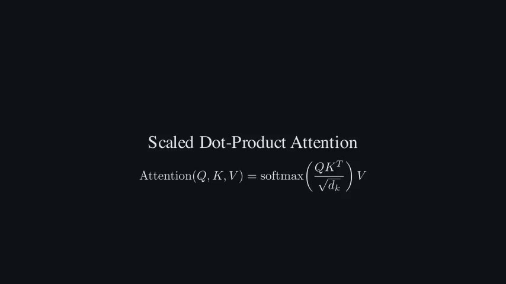

production_manifest.json
Loading manifest summary...
site/data/production_manifest.json
PaperMotion
Paste a formula or paper excerpt, run a simulated production pipeline, and preview the pre-rendered result.
Provide a formula, note, or paper excerpt
Attention(Q,K,V)=softmax(QK^T/sqrt(d_k))V
Preset pipeline, simulated locally
Click a workflow step to inspect the preset output
Pre-rendered output locked

PaperMotion follows a deterministic chain so viewers can see where the explanation, render, and final video came from.
The sample run uses scaled dot-product attention because it has real symbols, clear mechanism steps, and a short Manim-renderable path.
The website mirrors the same repo artifacts the production workflow uses: a project registry plus scene-level execution contracts.
Loading manifest summary...
site/data/production_manifest.json
Loading scene spec summary...
site/data/enriched_scene_spec.json
Manim owns formulas, matrices, labels, and symbolic transformations. AI video is only for optional atmosphere, transitions, and non-symbolic support shots.
no fake equations from AI video